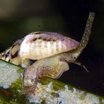
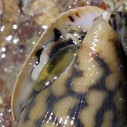

|
|
| shelled snails text index | photo index |
| Phylum Mollusca > Class Gastropoda |
| Dove
snails Family Columbellidae updated Jul 2020
Where seen? These pretty small snails can be common on some of our natural rocky shores and also in our seagrass meadows. But they are usually overlooked, the pretty patterns on their shells sometimes hidden by algae and encrusting animals. Features: 1-2cm. The thick shell has a narrow opening that is thickened. A crab would probably find it difficult to stick a pincer into the opening. The thick smooth shell is also likely to be a slippery tricky thing for a crab to try to crush. The operculum is long and made out of a horn-like material. The foot is narrow and strong, and the siphon very long. |
 Kusu Island, Dec 04 |
 Sentosa, Oct 04 |
 Narrow opening in a thick shell. |
| What do they eat? The dove snails
commonly seen on our shores graze on algae. Those that live on seagrass
are grazers, chomping up diatoms, sponges and other tiny animals on
the seagrass blades, while also scraping some of the seagrass itself.
Elsewhere, other species are carnivorous and may eat other molluscs,
polychaete worms, crustaceans and ascidians. Dove babies: Dove snails lay hemi-spherical eggs under rocks and other nooks and crannies. Human uses: They are mainly collected for their colourful shells often made into necklaces for the tourist souvenir trade, although sometimes used for food. Status and threats: None of our dove snails are listed among the threatened animals of Singapore due to habitat loss. However, like other creatures of the intertidal zone, they are affected by human activities such as reclamation and pollution. Trampling by careless visitors and overcollection can also have an impact on local populations. |
| Some Dove snails on Singapore shores |
| Family
Columbellidae recorded for Singapore from Tan Siong Kiat and Henrietta P. M. Woo, 2010 Preliminary Checklist of The Molluscs of Singapore. +Other additions (Singapore Biodiversity Record, etc)
|
Links
References
|